HCI Senior Capstone
Eco-Touch: 3D Touch Table Exhibit
For my HCI senior capstone project, my team of five worked with the Stony Brook Millstone Watershed Association to prototype an environmental exhibit with the goal to educate the community about sustainable practices in homes.
Hunt Statement
"Create an exhibit visualizing (and encouraging) sustainable building practices through live and simulated environmental data to foster an educational environment for center visitors."

Stony Brook Millstone Watershed Association was constructing a new environmental center. The center would incorporate exhibits, classrooms, and a laboratory that focus on watershed conservation, while also obtaining a LEED Platinum rating. In order to do so, the center planned to incorporate various "green" systems that reduce the center's impact on the environment. However, to fully obtain this rating and fulfill their mission statement, the association wished to incorporate an exhibit into the center that would provide information about the center's various systems, as well as educate individuals on sustainable building practices. This exhibit would appeal to children, homeowners, contractors/building officials, and policy makers to enhance their understanding of and encourage the use of such systems featured in the center.
Research Phase
During our one-month research phase, we visited a wide range of museums, LEED certified buildings, and a greenhouse conservatory. We also interviewed architects, professors, elementary school teachers, and parents. Finally, we gathered factual evidence from published research papers to gain insight into exhibit designs and museum visitor psychology.
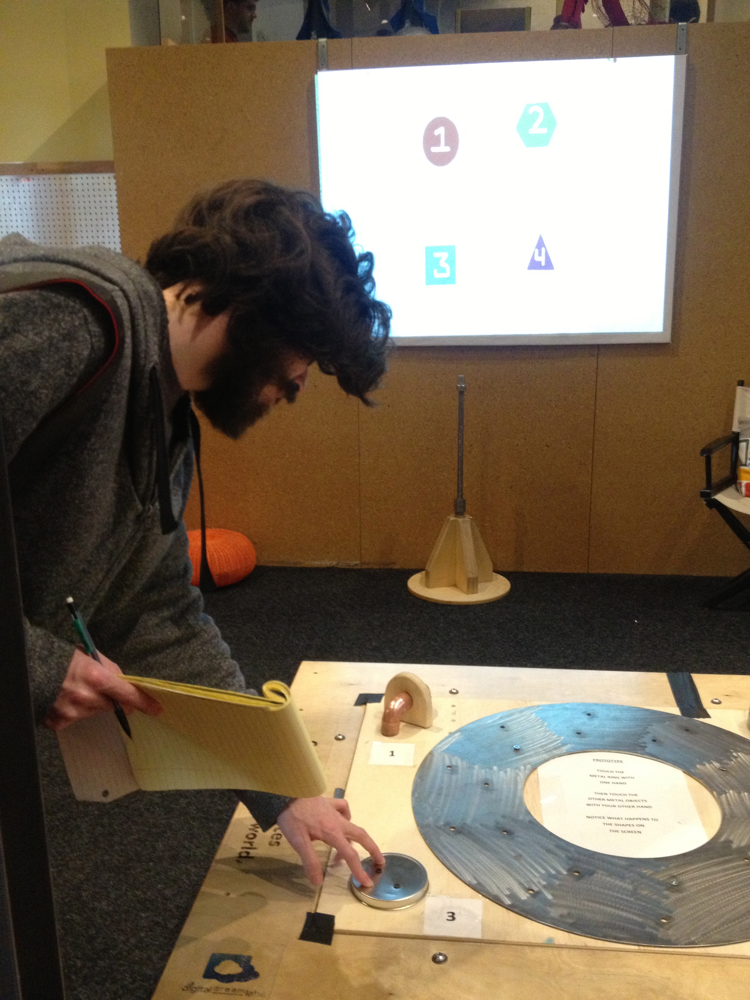 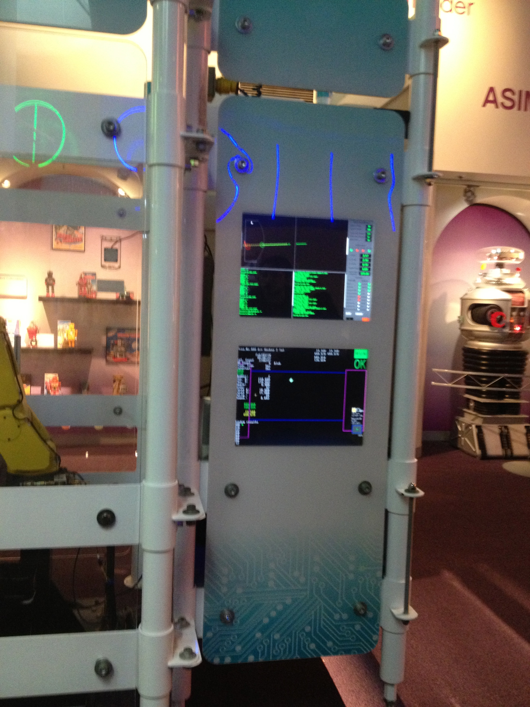We came up with several research methods to collect user data such as observe in an analogous domain, heuristic evaluation of a similar pre-existing system, Fly on the Wall (we noted down all types of interactions between each museum visitor and different exhibit systems using "AEIOU"), and "Write Your Experience" (we asked several museum visitors to write or draw a piece of information they have acquired from the exhibit).
To better organize and visualize the data we collected, we created an affinity diagram, generated graphs, conducted a competitive analysis and constructed user personas based on our findings. After our analysis, we summarized a visitor's typical interaction with an exhibit into the following steps: Surprise, Engage, Learn and Apply.
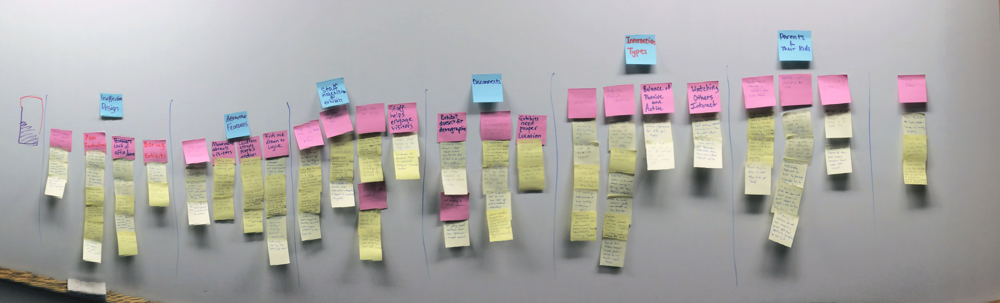Ideation/Low Fidelity
After reviewing our consolidated data, the team began brainstorming potential solutions and came up with over 40 different concepts for discussion. We then took the desired elements of each concept and constructed a second affinity diagram to document and categorize these desired elements at a high level. Taking the five high-level categories, we moved into storyboarding and agreed on a final concept.
Next, we created a low fidelity prototype to study how different visitors would react to our exhibit concept and also to initiate a conversation around sustainable practices and envrionment education in the community. During our research, one of our key observations was that exhibits tend to attract visitors from afar with their cool technology or sensory stimulation (flashing lights, interesting sounds, strange smell etc). The challenge is to maintain visitors' interest once they approach the exhibit, help them understand the key purpose of the exhibit designer and learn something new. We wanted to conduct our user testing without the distraction of the technology and see how users react to the process of environmental education standalone.
Our Final Concept
In the end, the team collectively decided on an interactive game concept in which players aim to build the most environmentally sustainable building while simultaneous learning about each sustainable system. The game would model sustainable systems based on geographic location (taking into the climate and biomes into account) and provide an overall green score based on a combination of green factors. Players start by choosing a home and finding their location on the map and can explore various sustainable systems to incorporate into this home. Then they look at the effects of such systems based on factors ranging from water savings, electricity savings and cost savings over time.
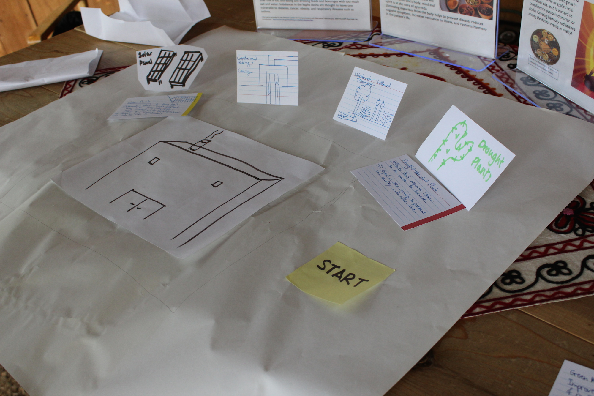Medium Fidelity
While gathering some initial user feedback, we simutaneously looked into various hardware, frameworks, and technology.
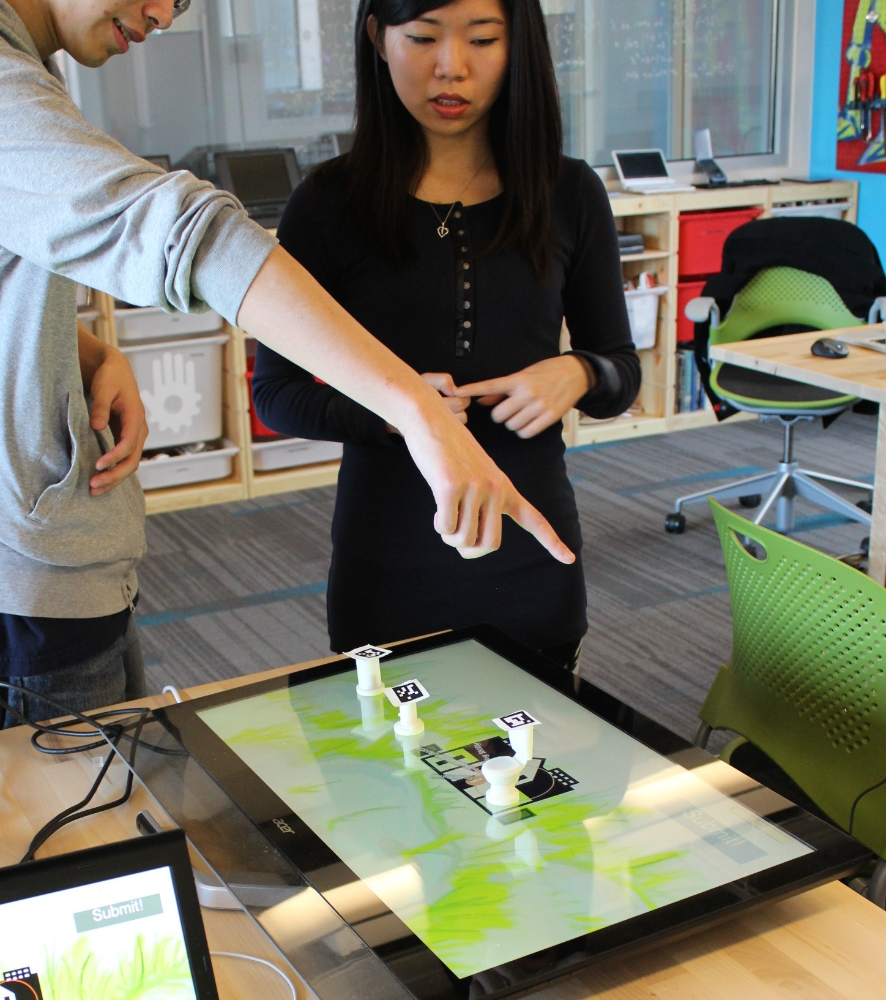Our concept requires the touch table to detect which sustainable systems the player is placing on the surface. There are available solutions in the market for touch tables to easily do motion tacking. However, due to some monetary constraints for our prototype, we instead used motion tracking markers (AR markers), a camera mounted directly above the touch screen and a computer vision library to locate each game piece on the screen.
In this prototype, we included game pieces, which we 3D printed for solar panel, geothermal heating and rain barrel. Some of the feedback we received from the previous user test was lack of affordance and clarity of the game goal. Players can read about each sustainable system when they place the 3D piece on the screen and the system would appear on the house to provide a visual representation of the system installed in the house. We conducted 7 user tests with this version of the prototype and analyzed the feedback we received.
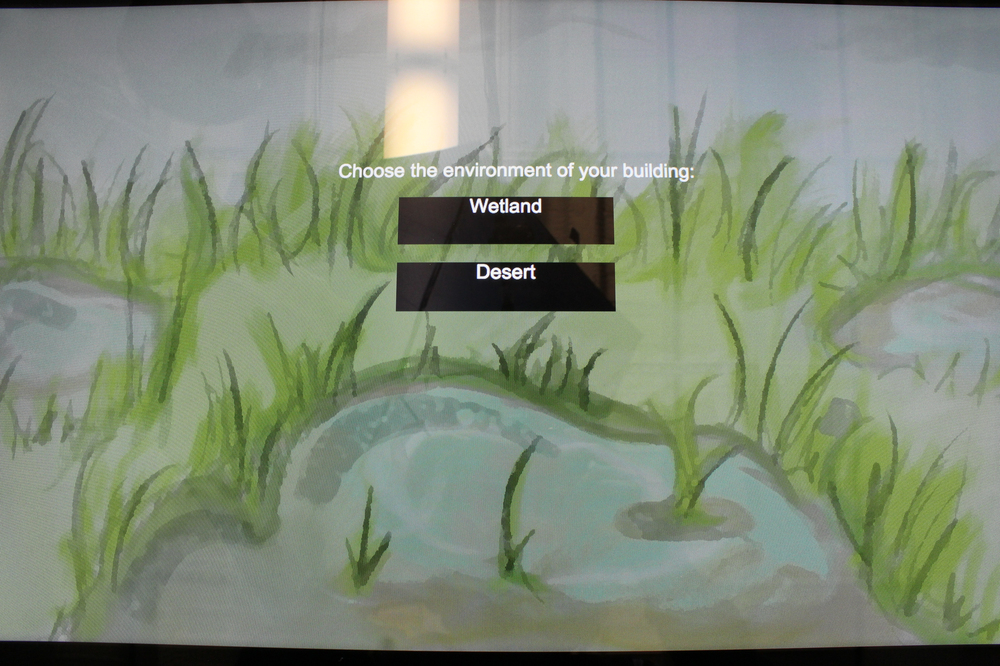 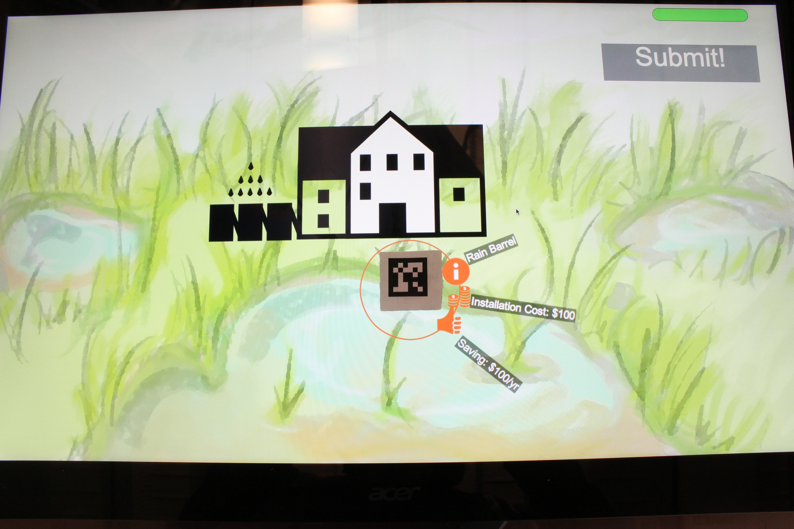 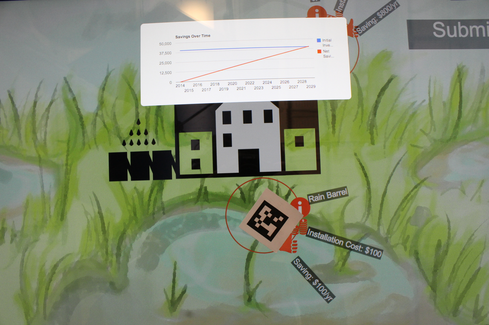High Fidelity
For our final prototype, we refined the features based on the feedback received from our users. Our user test was conducted in two parts: first we observed the user as he/she interacts with the system. Following the game play, we had each user fill out a survey. Players expressed interest in the touch screen and the animated systems. They also enjoyed having tangible objects to hold. However, they thought the goal of the game was not made very clear in the beginning and some people mentioned that they did not know where to place the pieces to add to the house. We addressed these comments by adding a game tutorial and adding placement slots on the game board to provide an affordance for system placement. Following that change, users still expressed slight confusion about game piece placement so we redesigned the slots to further improve the affordance. We changed the presentation of the system scoring by including a star rating system and a breakdown of factors incorporated in the rating.
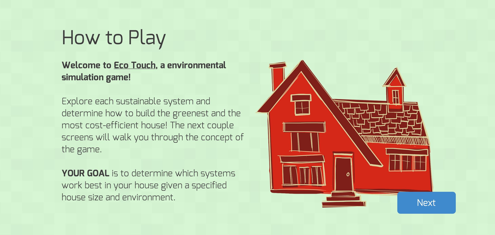 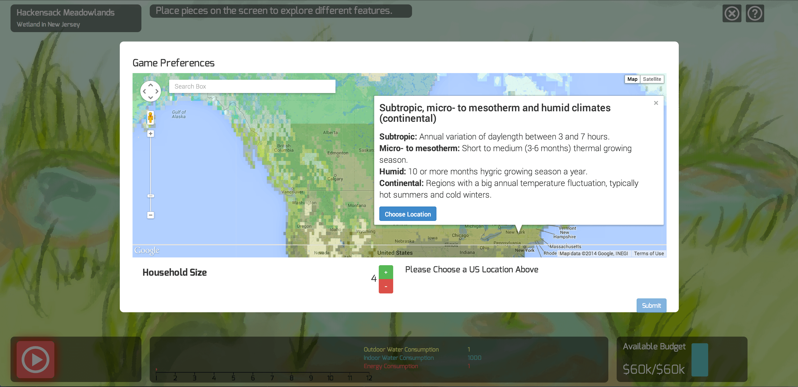 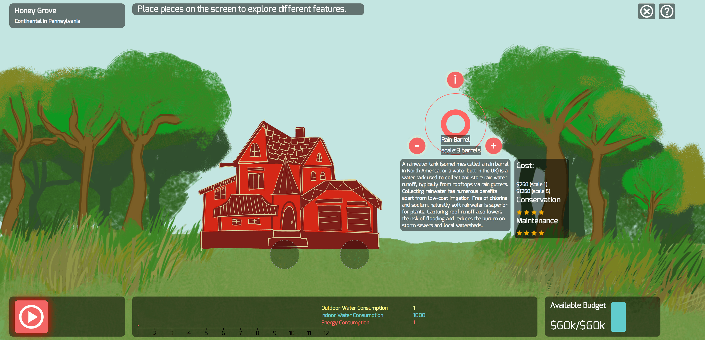 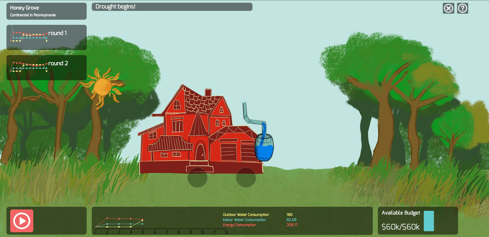The final prototype was well received as indicated by the last round of user testing and demo to the client. Users found the graphics appealing and the game interesting. The client thought our game was a very creative idea and is planning to source a touch table game in preparation of the grand opening.